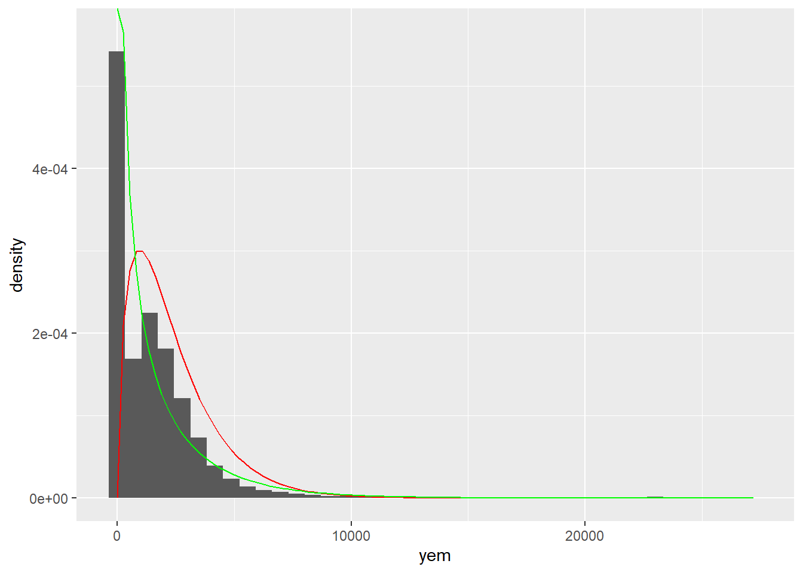

Testing msms
Importing data
Tidying and selecting variables
test_df <- full_pred_data |>
filter(dag > 17 & dag < 67 & dms != 0) |>
mutate(
work = case_when(
lhw <= 5 ~ "Zero",
lhw <= 15 ~ "Ten",
lhw <= 25 ~ "Twenty",
lhw <= 35 ~ "Thirty",
lhw > 35 ~ "Forty",
.default = "Zero"
),
employed = case_when(les < 4 ~ 1,
les > 4 ~ 0),
work = factor(work),
dgn = factor(dgn, labels = c("Female", "Male")),
dms = factor(
dms,
levels = 1:5,
labels = c("Single", "Married", "Separated", "Divorced", "Widowed")
),
deh = factor(
deh,
levels = 0:5,
labels = c(
"Not completed Primary",
"Primary",
"Lower Secondary",
"Upper Secondary",
"Post Secondary",
"Tertiary"
)
),
amrtn = factor(
amrtn,
levels = 1:7,
labels = c(
"Owned on mortgage",
"Owned outright",
"Rented",
"Reduced Rented",
"Social Rented",
"Free",
"Other"
)
)
) |>
filter(!is.na(employed)) |>
select(
year,
idhh,
idperson,
dag,
work,
employed,
ddi,
deh,
dgn,
dms,
dwt,
uc_income,
uc_receipt,
lba_income,
yem,
amrrm,
amrtn,
aca
)
#' dag: age
#' ddi: disabled
#' deh: highest education
#' dgn: gender
#' dms: marital status
#' yem: income
#' amrrm: number of rooms in house
#' amrtn: residence tenure
#' aca: car ownership
#' dwt: weightA causal model to test
library(DiagrammeR)
grViz(
'digraph {
node[shape=plaintext, fontname=Arial]
a [label="Marital status"]
b [label="Rooms in house"]
c [label="Employment"]
d [label="Income"]
edge[color = red, style = dashed]
a -> b [minlen = 10, style = solid]
a -> c -> b
a -> d -> b
c -> d
{rank = min; a; b}
{rank = same; c; d}
}'
)Let’s try marital status as multi-cat
mod2a <- nnet::multinom(dms ~ 1, data = test_df, family = binomial)# weights: 10 (4 variable)
initial value 237353.465575
iter 10 value 150669.885784
final value 150641.825828
convergedmod2b <- nnet::multinom(dms ~ dag + ddi + deh + dgn, data = test_df, family = binomial)# weights: 50 (36 variable)
initial value 237353.465575
iter 10 value 135605.046479
iter 20 value 133556.688517
iter 30 value 128210.680171
iter 40 value 126737.546340
final value 126680.316620
converged# create probability prediction lookup tables
wg0 <-
predict(mod2a, type = "probs", newdata = test_df) |>
as_tibble() |>
bind_cols(select(test_df, year, idperson)) |>
pivot_longer(-c(idperson, year), names_to = "dms", values_to = "wg0") |>
mutate(dms = factor(
dms,
levels = c("Single", "Married", "Separated", "Divorced", "Widowed")
))
wg1 <-
predict(mod2b, type = "probs", newdata = test_df) |>
as_tibble() |>
bind_cols(select(test_df, year, idperson)) |>
pivot_longer(-c(idperson, year), names_to = "dms", values_to = "wg1") |> mutate(dms = factor(
dms,
levels = c("Single", "Married", "Separated", "Divorced", "Widowed")
))
mar_weighted <- test_df |>
left_join(wg0, by = c("year", "idperson", "dms")) |>
left_join(wg1, by = c("year", "idperson", "dms")) |>
mutate(weight_mar = wg0/wg1, .before = year)Testing fit
svy_style_unw <- svydesign(ids = ~idperson, weights = ~1, data = mar_weighted)
svy_style_w <- svydesign(ids = ~idperson, weights = ~weight_mar, data = mar_weighted)
tableunweighted <- svyCreateTableOne(vars = c("dag", "ddi", "deh", "dgn"),
strata = "dms",
data = svy_style_unw, smd = TRUE)
tableweighted <- svyCreateTableOne(vars = c("dag", "ddi", "deh", "dgn"),
strata = "dms",
data = svy_style_w, smd = TRUE)
tibble(
variable = rownames(attr(tableweighted$ContTable, "smd")),
weighted = attr(tableweighted$ContTable, "smd")[,1],
unweighted = attr(tableunweighted$ContTable, "smd")[,1]
) |>
bind_rows(
tibble(
variable = rownames(attr(tableweighted$CatTable, "smd")),
weighted = attr(tableweighted$CatTable, "smd")[,1],
unweighted = attr(tableunweighted$CatTable, "smd")[,1]
)) |>
pivot_longer(-variable, names_to = "weighted", values_to = "smd") |>
ggplot(aes(smd, variable, colour = weighted)) +
geom_point() +
geom_vline(xintercept = 0.1, linetype = "dashed", colour = "grey") +
geom_vline(xintercept = - 0.1, linetype = "dashed", colour = "grey") Testing binary exposure - employment
mod1a <- glm(employed ~ dms, data = test_df, family = binomial)
mod1b <- glm(employed ~ dms + dag + ddi + deh + dgn, data = test_df, family = binomial)
emp_weighted <- test_df |>
mutate(wg0 = predict(mod1a, type = "response", newdata = test_df),
wg1 = predict(mod1b, type = "response", newdata = test_df),
across(wg0:wg1, ~ if_else(employed == 1, .x, 1-.x)),
weight_employed = wg0/wg1, .before = year)Testing fit
svy_style_unw <- svydesign(ids = ~idperson, weights = ~1, data = emp_weighted)
svy_style_w <- svydesign(ids = ~idperson, weights = ~weight_employed, data = emp_weighted)
tableunweighted <- svyCreateTableOne(vars = c("dag", "ddi", "deh", "dgn"),
strata = "employed",
data = svy_style_unw, smd = TRUE)
tableweighted <- svyCreateTableOne(vars = c("dag", "ddi", "deh", "dgn"),
strata = "employed",
data = svy_style_w, smd = TRUE)
tibble(
variable = rownames(attr(tableweighted$ContTable, "smd")),
weighted = attr(tableweighted$ContTable, "smd")[,1],
unweighted = attr(tableunweighted$ContTable, "smd")[,1]
) |>
bind_rows(
tibble(
variable = rownames(attr(tableweighted$CatTable, "smd")),
weighted = attr(tableweighted$CatTable, "smd")[,1],
unweighted = attr(tableunweighted$CatTable, "smd")[,1]
)) |>
pivot_longer(-variable, names_to = "weighted", values_to = "smd") |>
ggplot(aes(smd, variable, colour = weighted)) +
geom_point() +
geom_vline(xintercept = 0.1, linetype = "dashed", colour = "grey") +
geom_vline(xintercept = - 0.1, linetype = "dashed", colour = "grey") And finally, income as continuous
library(MASS, exclude = "select")
library(goft)Loading required package: fitdistrplusLoading required package: snLoading required package: stats4
Attaching package: 'sn'The following object is masked from 'package:lubridate':
dstThe following object is masked from 'package:stats':
sdg_fit <- gamma_fit(test_df$yem[test_df$yem != 0])
alpha_param <- mean(test_df$yem)^2/var(test_df$yem)
beta_param <- var(test_df$yem)/mean(test_df$yem)
test_df |>
ggplot(aes(yem)) +
geom_histogram(aes(y = after_stat(density)), bins = 40) +
geom_function(fun = dgamma, args = list(shape = g_fit[1], scale = g_fit[2]), colour = "red") +
geom_function(fun = dgamma, args = list(shape = alpha_param, scale = beta_param), colour = "green")
Gamma distrubution
mod3_g_a <- test_df |>
mutate(yem = yem + 1) %$%
glm(yem ~ employed + dms, family = Gamma(link = "inverse"))
mod3_g_b <- test_df |>
mutate(yem = yem + 1) %$%
glm(yem ~ employed + dms + dag + ddi + deh + dgn, family = Gamma(link = "inverse"))
shape_a <- 1/summary(mod3_g_a)$dispersion
shape_b <- 1/summary(mod3_g_b)$dispersion
yem_weighted <- test_df |>
mutate(
yem = yem + 1,
scale_a = predict(mod3_g_a, type = "response", newdata = test_df) / shape_a,
scale_b = predict(mod3_g_b, type = "response", newdata = test_df) / shape_b,
wg0 = dgamma(yem, shape_a, scale = scale_a),
wg1 = dgamma(yem, shape_b, scale = scale_b),
weight_yem = wg0/wg1,
.before = year
)Testing fit
svy_style_unw <- svydesign(ids = ~idperson, weights = ~1, data = yem_weighted)
svy_style_w <- svydesign(ids = ~idperson, weights = ~weight_yem, data = yem_weighted)
tibble(variable = c("dag", "ddi", "deh", "dgn"),
unweighted_design = list(svy_style_unw),
weighted_design = list(svy_style_w)) |>
pivot_longer(ends_with("design"), names_to = "design", values_to = "svy_obj", names_pattern = "(.*)_design") |>
mutate(model = map2(variable, svy_obj, ~ svyglm(formula(paste("yem ~", .x)), .y)),
coefs = map(model, broom::tidy)) |>
unnest(coefs) |>
select(variable, term, design, t_val = statistic) |>
filter(term != "(Intercept)") |>
ggplot(aes(t_val, interaction(variable, term))) +
geom_point(aes(colour = design)) +
geom_vline(aes(linetype = "inner", xintercept = 1), colour = "grey") +
geom_vline(aes(linetype = "inner", xintercept = -1), colour = "grey") +
geom_vline(aes(linetype = "outer", xintercept = 10), colour = "darkgrey") +
geom_vline(aes(linetype = "outer", xintercept = -10), colour = "darkgrey") +
scale_linetype_manual("t", values = c("dashed", "dotted"), labels = c("1", 10))# Gamma has to be adjusted so that yem != 0Normal distribution
mod3a <- lm(yem ~ employed + dms, data = test_df)
mod3b <- lm(yem ~ employed + dms + dag + ddi + deh + dgn, data = test_df)
yem_weighted <- test_df |>
mutate(mean0 = predict(mod3a, type = "response", newdata = test_df),
mean1 = predict(mod3b, type = "response", newdata = test_df)) |>
# group_by(dms, ddi, deh, dgn) |>
mutate(sd = sd(yem)) |> # some group-specific sds
# ungroup() |>
mutate(wg0 = dnorm(yem, mean = mean0, sd = sd),
wg1 = dnorm(yem, mean = mean1, sd = sd),
weight_yem = wg0/wg1, .before = year)Testing fit
svy_style_unw <- svydesign(ids = ~idperson, weights = ~1, data = yem_weighted)
svy_style_w <- svydesign(ids = ~idperson, weights = ~weight_yem, data = yem_weighted)
tibble(variable = c("dag", "ddi", "deh", "dgn"),
unweighted_design = list(svy_style_unw),
weighted_design = list(svy_style_w)) |>
pivot_longer(ends_with("design"), names_to = "design", values_to = "svy_obj", names_pattern = "(.*)_design") |>
mutate(model = map2(variable, svy_obj, ~ svyglm(formula(paste("yem ~", .x)), .y)),
coefs = map(model, broom::tidy)) |>
unnest(coefs) |>
select(variable, term, design, t_val = statistic) |>
filter(term != "(Intercept)") |>
ggplot(aes(t_val, interaction(variable, term))) +
geom_point(aes(colour = design)) +
geom_vline(aes(linetype = "inner", xintercept = 1), colour = "grey") +
geom_vline(aes(linetype = "inner", xintercept = -1), colour = "grey") +
geom_vline(aes(linetype = "outer", xintercept = 10), colour = "darkgrey") +
geom_vline(aes(linetype = "outer", xintercept = -10), colour = "darkgrey") +
scale_linetype_manual("t", values = c("dashed", "dotted"), labels = c("1", 10))Heteroscedastic normal
Estimating variance from loglinear model
# Estimating residuals - from normal models
added_resids <- test_df |>
mutate(log_sq_resid_a = log(sqrt(residuals(mod3a)^2)),
log_sq_resid_b = log(sqrt(residuals(mod3b)^2)))
mod_v_3a <- lm(log_sq_resid_a ~ employed + dms, data = added_resids)
mod_v_3b <- lm(log_sq_resid_b ~ employed + dms + dag + ddi + deh + dgn, data = added_resids)
yem_weighted <- test_df |>
mutate(mean0 = predict(mod3a, type = "response", newdata = test_df),
mean1 = predict(mod3b, type = "response", newdata = test_df),
sd0 = exp(predict(mod_v_3a, type = "response", newdata = test_df)),
sd1 = exp(predict(mod_v_3b, type = "response", newdata = test_df))) |>
# mutate(sd = sd(yem)) |> # some group-specific sds
mutate(wg0 = dnorm(yem, mean = mean0, sd = sd0),
wg1 = dnorm(yem, mean = mean1, sd = sd1),
weight_yem = wg0/wg1, .before = year)Testing fit
summary(yem_weighted$weight_yem) Min. 1st Qu. Median Mean 3rd Qu. Max. NA's
0.0000 0.6949 1.0797 Inf 2.3015 Inf 1 yem_weighted |>
mutate(weight = case_when(
weight_yem == 0 ~ "Zero",
is.infinite(weight_yem) ~ "Infinite",
is.na(weight_yem) ~ "Missing",
.default = "Positive weight"
)) |>
count(weight)# A tibble: 4 × 2
weight n
<chr> <int>
1 Infinite 16
2 Missing 1
3 Positive weight 147455
4 Zero 4yem_weighted <-
yem_weighted |>
filter(!is.infinite(weight_yem), !is.na(weight_yem), weight_yem < 0.01)
svy_style_unw <- svydesign(ids = ~idperson, weights = ~1, data = yem_weighted)
svy_style_w <- svydesign(ids = ~idperson, weights = ~weight_yem, data = yem_weighted)
tibble(variable = c("dag", "ddi", "deh", "dgn"),
unweighted_design = list(svy_style_unw),
weighted_design = list(svy_style_w)) |>
pivot_longer(ends_with("design"), names_to = "design", values_to = "svy_obj", names_pattern = "(.*)_design") |>
mutate(model = map2(variable, svy_obj, ~ svyglm(formula(paste("yem ~", .x)), .y)),
coefs = map(model, broom::tidy)) |>
unnest(coefs) |>
select(variable, term, design, t_val = statistic) |>
filter(term != "(Intercept)") |>
ggplot(aes(t_val, interaction(variable, term))) +
geom_point(aes(colour = design)) +
geom_vline(aes(linetype = "inner", xintercept = 1), colour = "grey") +
geom_vline(aes(linetype = "inner", xintercept = -1), colour = "grey") +
geom_vline(aes(linetype = "outer", xintercept = 10), colour = "darkgrey") +
geom_vline(aes(linetype = "outer", xintercept = -10), colour = "darkgrey") +
scale_linetype_manual("t", values = c("dashed", "dotted"), labels = c("1", 10))Warning: There were 8 warnings in `mutate()`.
The first warning was:
ℹ In argument: `model = map2(...)`.
Caused by warning in `summary.glm()`:
! observations with zero weight not used for calculating dispersion
ℹ Run `dplyr::last_dplyr_warnings()` to see the 7 remaining warnings.# Big problem here - sds are much smaller in these models so probabilities for large wages are ~0Possible to predict variance from mlm?
library(nlme)
# library(lme4)
# mod_h_3a <- lmer(yem ~ (1 | employed/dms), data = test_df)
mod_h_3a <- lme(fixed = yem ~ 1, random = ~ 1|employed/dms, data = test_df)
mod_h_3a <- lme(yem ~ employed + dms, random = list(idperson = pdDiag(~employed/dms)), data = test_df)
mod_h_3b <- lme(yem ~ employed + dms + dag + ddi + deh + dgn, random = list(idperson = pdDiag(~employed/dms/dag/ddi/deh/dgn)), data = test_df)
mod_h_3a |>
VarCorr()Binned quantiles
# Binning into 'zero wage' plus 15 wage bracket quantiles
binned_yem <- test_df |>
mutate(yem_b = cut(yem, breaks = c(0, quantile(test_df$yem[test_df$yem != 0], 0:15/15)), include.lowest = TRUE))
mod3_b_a <- nnet::multinom(yem_b ~ employed + dms, data = binned_yem, )# weights: 112 (90 variable)
initial value 408890.294400
iter 10 value 318371.616457
iter 20 value 317456.977738
iter 30 value 312874.149576
iter 40 value 304817.766057
iter 50 value 303304.960550
iter 60 value 301768.348709
iter 70 value 301323.033344
iter 80 value 301038.679283
iter 90 value 300967.865162
iter 100 value 300886.539622
final value 300886.539622
stopped after 100 iterationsmod3_b_b <- nnet::multinom(yem_b ~ employed + dms + dag + ddi + deh + dgn, data = binned_yem)# weights: 240 (210 variable)
initial value 408890.294400
iter 10 value 335646.432266
iter 20 value 307259.277572
iter 30 value 300979.670752
iter 40 value 298480.165616
iter 50 value 290977.174758
iter 60 value 289750.363297
iter 70 value 289501.598388
iter 80 value 289238.121484
iter 90 value 289016.140553
iter 100 value 288901.923131
final value 288901.923131
stopped after 100 iterationswg0 <-
predict(mod3_b_a, type = "probs", newdata = binned_yem) |>
as_tibble() |>
bind_cols(select(binned_yem, year, idperson)) |>
pivot_longer(-c(idperson, year), names_to = "yem_b", values_to = "wg0") |>
mutate(yem_b = factor(
yem_b,
levels = levels(binned_yem$yem_b)
))
wg1 <-
predict(mod3_b_b, type = "probs", newdata = binned_yem) |>
as_tibble() |>
bind_cols(select(binned_yem, year, idperson)) |>
pivot_longer(-c(idperson, year), names_to = "yem_b", values_to = "wg1") |>
mutate(yem_b = factor(
yem_b,
levels = levels(binned_yem$yem_b)
))
yem_weighted <- binned_yem |>
left_join(wg0, by = c("year", "idperson", "yem_b")) |>
left_join(wg1, by = c("year", "idperson", "yem_b")) |>
mutate(weight_yem = wg0/wg1, .before = year)Testing fit
svy_style_unw <- svydesign(ids = ~idperson, weights = ~1, data = yem_weighted)
svy_style_w <- svydesign(ids = ~idperson, weights = ~weight_yem, data = yem_weighted)
tableunweighted <- svyCreateTableOne(vars = c("dag", "ddi", "deh", "dgn"),
strata = "yem_b",
data = svy_style_unw, smd = TRUE)
tableweighted <- svyCreateTableOne(vars = c("dag", "ddi", "deh", "dgn"),
strata = "yem_b",
data = svy_style_w, smd = TRUE)
tibble(
variable = rownames(attr(tableweighted$ContTable, "smd")),
weighted = attr(tableweighted$ContTable, "smd")[,1],
unweighted = attr(tableunweighted$ContTable, "smd")[,1]
) |>
bind_rows(
tibble(
variable = rownames(attr(tableweighted$CatTable, "smd")),
weighted = attr(tableweighted$CatTable, "smd")[,1],
unweighted = attr(tableunweighted$CatTable, "smd")[,1]
)) |>
pivot_longer(-variable, names_to = "weighted", values_to = "smd") |>
ggplot(aes(smd, variable, colour = weighted)) +
geom_point() +
geom_vline(xintercept = 0.1, linetype = "dashed", colour = "grey") +
geom_vline(xintercept = - 0.1, linetype = "dashed", colour = "grey")